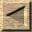
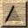
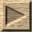

Subir: Índice
Siguiente: Manos a la obra
Introducción
El objetivo de este cursillo es que desde el primer momento se
produzcan resultados tangibles, sin perderse en explicaciones
preliminares. Lo primero es lograr algo que funcione, después se
explicará cómo funciona.
Así que es altamente recomendable que sigas todos los pasos sobre un
ordenador real, sobre la práctica. Necesitarás:
- Un editor de texto, para poder escribir tu juego. Se recomienda
usar un editor de Windows (o de linux) para que los acentos y eñes
salgan correctamente. No uses EDIT del DOS.
- El compilador de Inform (por ejemplo, en su versión para
Windows).
- La librería InformatE!. Esta no depende del sistema operativo
que tú utilices. Importante: Para poder seguir este
cursillo necesitarás bajarte la última versión de la librería (del
16 de Marzo de 1999).
- Los dos ingredientes anteriores te permitirán crear un juego,
pero no podrás jugar aún con él. El programa FROTZ te permitirá
jugar el juego que has creado. FROTZ existe para muchos ordenadores
y operativos diferentes (te recomiendo usar el Frotz para
DOS,
que es el que mejor soporte tiene para los cambios de color y para
los caracteres internacionales). Observa que puedes jugar el juego
en un ordenador completamente diferente del que usaste para crearlo
(por ejemplo, puedes jugarlo en un ordenador de mano, como la Palm
Pilot o la Casiopea). Esto aumenta el número de jugadores
potenciales de tu juego.
Todos los ingredientes anteriores puedes encontrarlos en la página Web
de Inform en Español
(http://www.geocities.com/TimesSquare/Fortress/9939). De
momento, para simplificar las cosas, pon todos estos ingredientes en
un solo directorio de tu disco duro. Pongamos por ejemplo
C:\inform
Zak McKraken - spinf@geocities.com